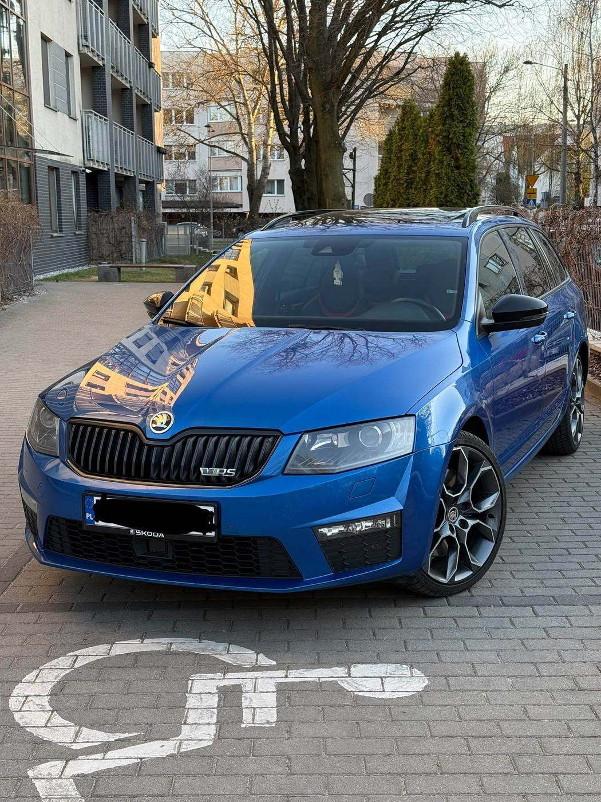
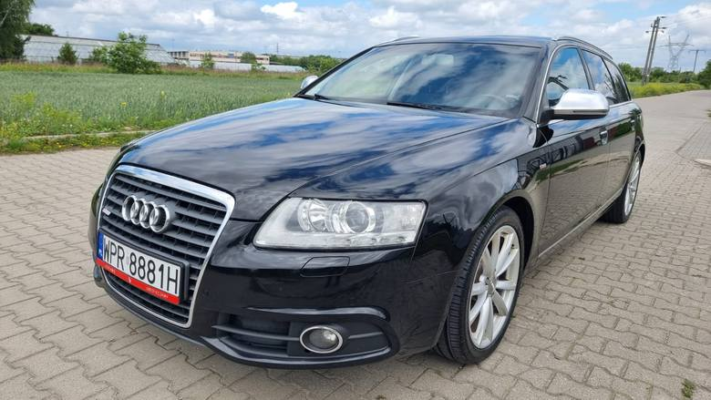
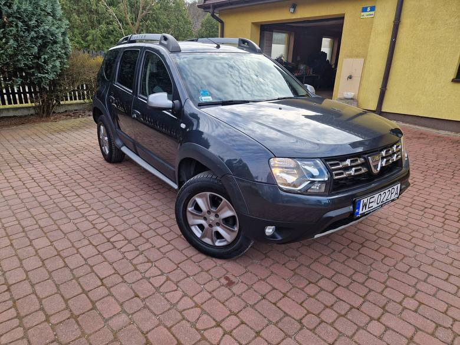
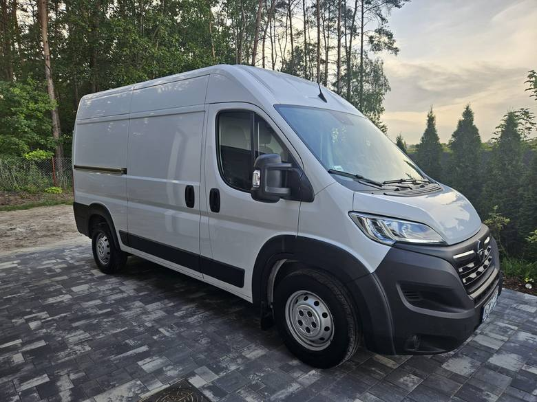
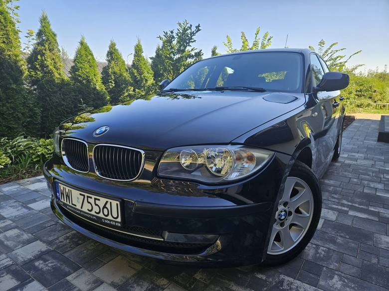
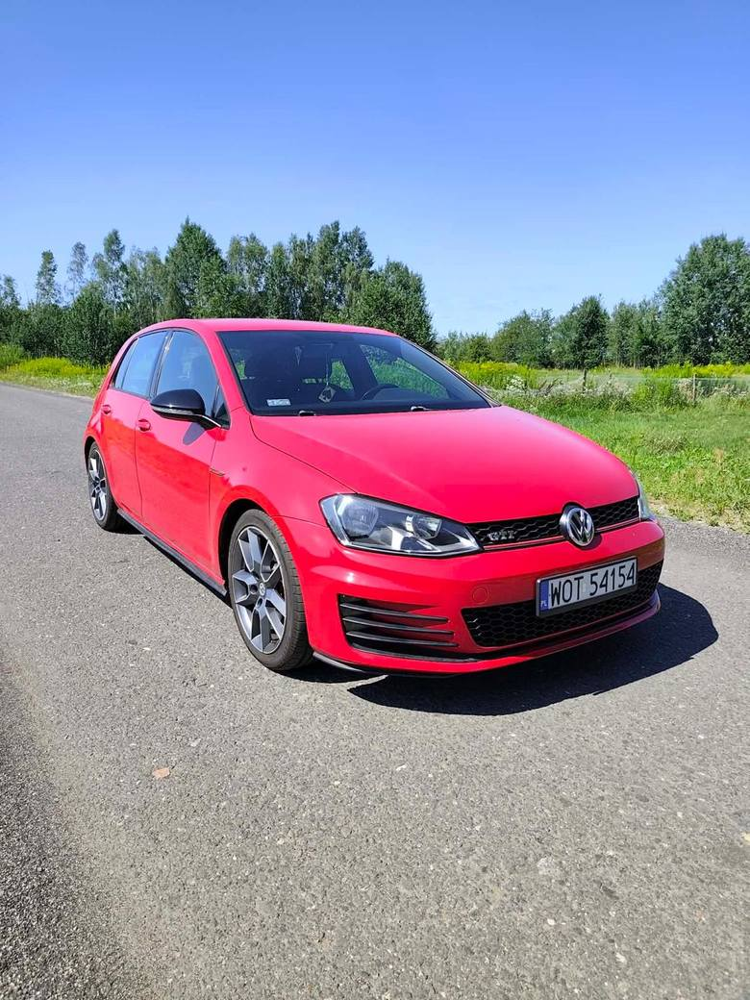
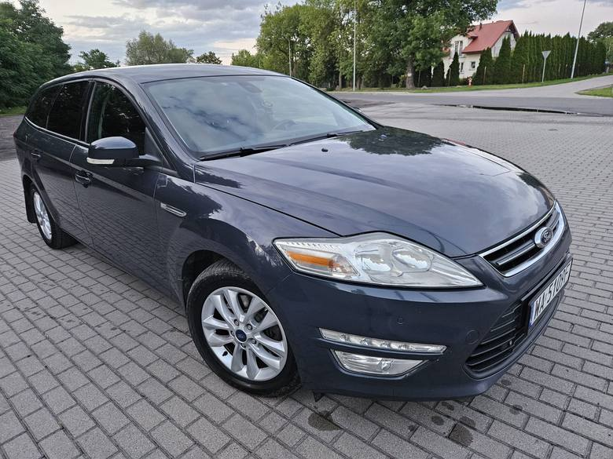
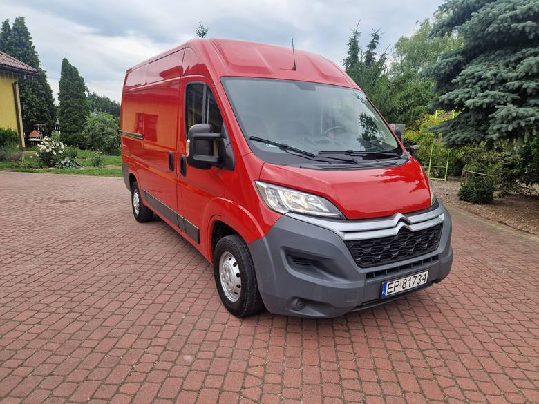
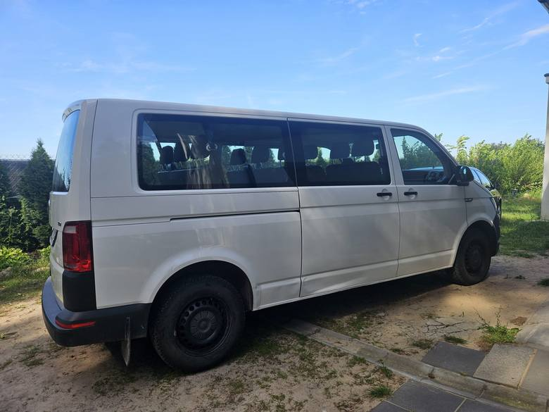
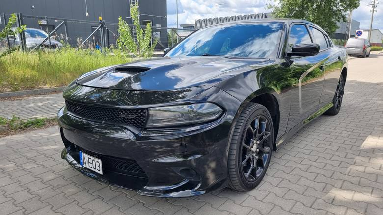

Twoje zaufanie, nasze doświadczenie
Skup aut za gotówkęi sprzedaż samochodów
Prowadzimy skup samochodów na terenie całego Mazowsza — każda marka, każdy rocznik, także skup aut uszkodzonych i powypadkowych. A jeśli szukasz auta dla siebie, nasz komis samochodowy znajdzie je i sprawdzi przed zakupem.
Wycena online
Wycena auta
w piętnaście minut
Cztery krótkie kroki. Widełki widzisz od razu na ekranie, jeszcze zanim ktokolwiek do Ciebie zadzwoni.
Wyliczenie na danych rynkowych — to nie jest oferta. Widełki potwierdzamy przez telefon, ostateczną kwotę po oględzinach. I nie zmieniamy jej przy podpisie.
Cztery zasady, od których nie odstępujemy
Na czym możesz polegać
W skupie aut najwięcej ludzi sparzyło się nie na cenie, tylko na tym, że ktoś zmienił zdanie w ostatniej chwili. Dlatego zaczynamy od tego.
Cena z telefonu nie zmienia się przy podpisie
Najczęstsza zagrywka w tej branży: kwota przez telefon wysoka, a na miejscu nagle „no wie Pan, jednak…”. U nas jeśli auto zgadza się z opisem, płacimy dokładnie tyle, ile powiedzieliśmy.
Dojazd i laweta kosztują zero — także wtedy, gdy się nie dogadamy
Przyjeżdżamy na własny koszt. Jeśli po obejrzeniu auta kwota Ci nie pasuje, po prostu nie podpisujesz umowy i nie płacisz nic.
Pieniądze zanim auto ruszy z miejsca
Kolejność jest zawsze ta sama: umowa, wypłata gotówką albo przelewem, dopiero potem ładujemy auto. Nigdy odwrotnie.
Papiery bierzemy na siebie
Umowę kupna-sprzedaży przygotowujemy na miejscu. Zgłoszenie zbycia w wydziale komunikacji i sprawę z ubezpieczycielem załatwiamy za Ciebie.
Dwie strony jednej transakcji
Skup aut albo komis samochodowy
Większość skupów robi tylko jedno. My prowadzimy obie strony — auto skup i sprzedaż aut używanych — dlatego wiemy, ile Twoje auto jest naprawdę warte na rynku.

SkupSprzedam auto
Skup aut za gotówkę — przyjeżdżamy pod wskazany adres, oglądamy auto i płacimy na miejscu.
- Każda marka i rocznik, także powypadkowe i niejeżdżące
- Bez ważnego OC albo przeglądu
- Osobowe, dostawcze, terenowe, pickupy i busy
- Odkup flot firmowych i aut poleasingowych

SprzedażSamochody używane
Każde auto z naszej oferty przechodzi sprawdzenie przed wystawieniem.
- Historia pojazdu i przebieg sprawdzone przed sprzedażą
- Umowa i komplet dokumentów, bez niespodzianek
- Szukamy też auta na zamówienie, pod Twój budżet
- Możliwość rozliczenia w rozliczeniu za Twoje stare auto
Przebieg sprawy
Trzy kroki i auto sprzedane
Bez wystawiania ogłoszeń, bez oglądaczy pod domem, bez czekania na przelew od nieznajomego.
Zgłoszenie
Dzwonisz albo wypełniasz formularz. Pytamy o markę, rocznik, przebieg i stan — widełki podajemy jeszcze przez telefon.
Oględziny
Przyjeżdżamy w umówionym miejscu i o umówionej godzinie. Oglądamy auto i podajemy ostateczną kwotę.
Umowa i gotówka
Podpisujesz umowę, dostajesz pieniądze, my zabieramy auto i załatwiamy resztę papierów.
Dowód, nie deklaracja
Auta, które już odkupiliśmy
Prawdziwe transakcje, nie zdjęcia ze stocka. Od trzydziestoletniego mercedesa po skrzyniowego craftera.







Obszar działania
Skup aut na całym Mazowszu
Bazę mamy w Sochaczewie. Każde miasto ma własną stronę z informacją o dojeździe, terminach i obsługiwanych gminach.
Pytania
Zanim zadzwonisz
Ile trwa wycena i czy jest darmowa?
Widełki podajemy przez telefon w kilkanaście minut. Wycena jest darmowa i nie zobowiązuje do sprzedaży — jeśli kwota Ci nie pasuje, po prostu nie podpisujesz umowy.
Czy odbierzecie auto, które nie jeździ?
Tak. Auta niejeżdżące i powypadkowe zabieramy lawetą, transport jest po naszej stronie.
Czy kupicie auto bez ważnego OC albo przeglądu?
Tak. Brak OC lub przeglądu nie blokuje sprzedaży — wpływa tylko na kwotę.
Czy mogę sprzedać auto w imieniu członka rodziny?
Tak, jeśli masz pisemne pełnomocnictwo od właściciela oraz dowód rejestracyjny. Przy współwłasności potrzebne są podpisy obu właścicieli.
Kiedy dostanę pieniądze?
Na miejscu, zaraz po podpisaniu umowy kupna-sprzedaży. Gotówką albo przelewem — jak wolisz.
Kto załatwia formalności po sprzedaży?
My. Umowę przygotowujemy na miejscu, a zgłoszenie zbycia i sprawy z ubezpieczycielem bierzemy na siebie.
Jeden telefon i masz to z głowy
Sprawdź, ile dostaniesz za swoje auto
Wycena jest darmowa i nie zobowiązuje do sprzedaży. Dojazd i laweta po naszej stronie — także wtedy, gdy się nie dogadamy.